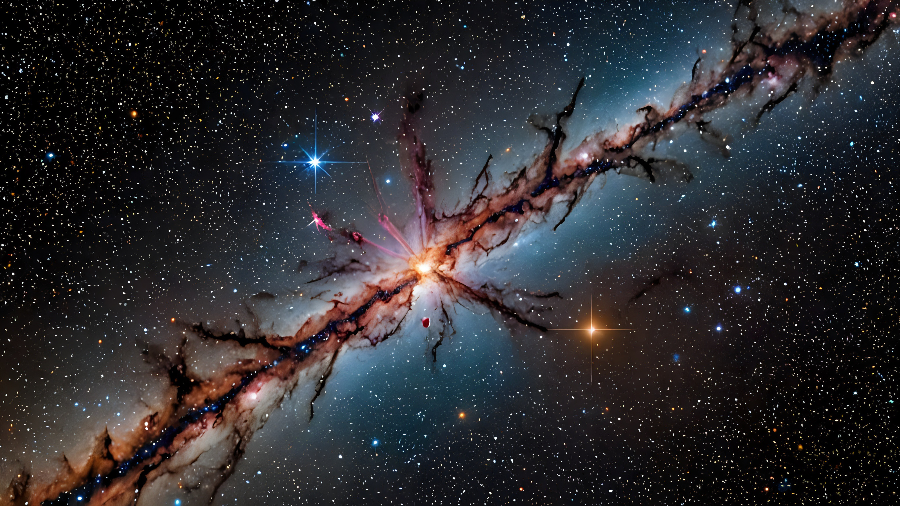

Knowledge of Spacecrafts
1. Apollo 11 - The First Moon Landing
The Apollo 11 mission, launched by NASA in 1969, was the first manned mission to land on the Moon. This historic spacecraft carried astronauts Neil Armstrong, Buzz Aldrin, and Michael Collins. Armstrong became the first human to step onto the lunar surface, famously saying, "That's one small step for man, one giant leap for mankind."
2. Voyager 1 - Exploring the Interstellar Space
Launched in 1977, Voyager 1 is a space probe that has traveled farther than any other human-made object. It carries the Golden Record, a time capsule intended to communicate the story of Earth to extraterrestrials. Voyager 1 continues to send valuable data back to Earth as it explores the vast interstellar space.
3. SpaceX Dragon - Revolutionizing Space Travel
The SpaceX Dragon spacecraft, developed by Elon Musk's SpaceX, is designed for cargo and crew transportation. It became the first commercial spacecraft to dock with the International Space Station (ISS) in 2012. The Dragon represents a major step forward in reusable space technology.